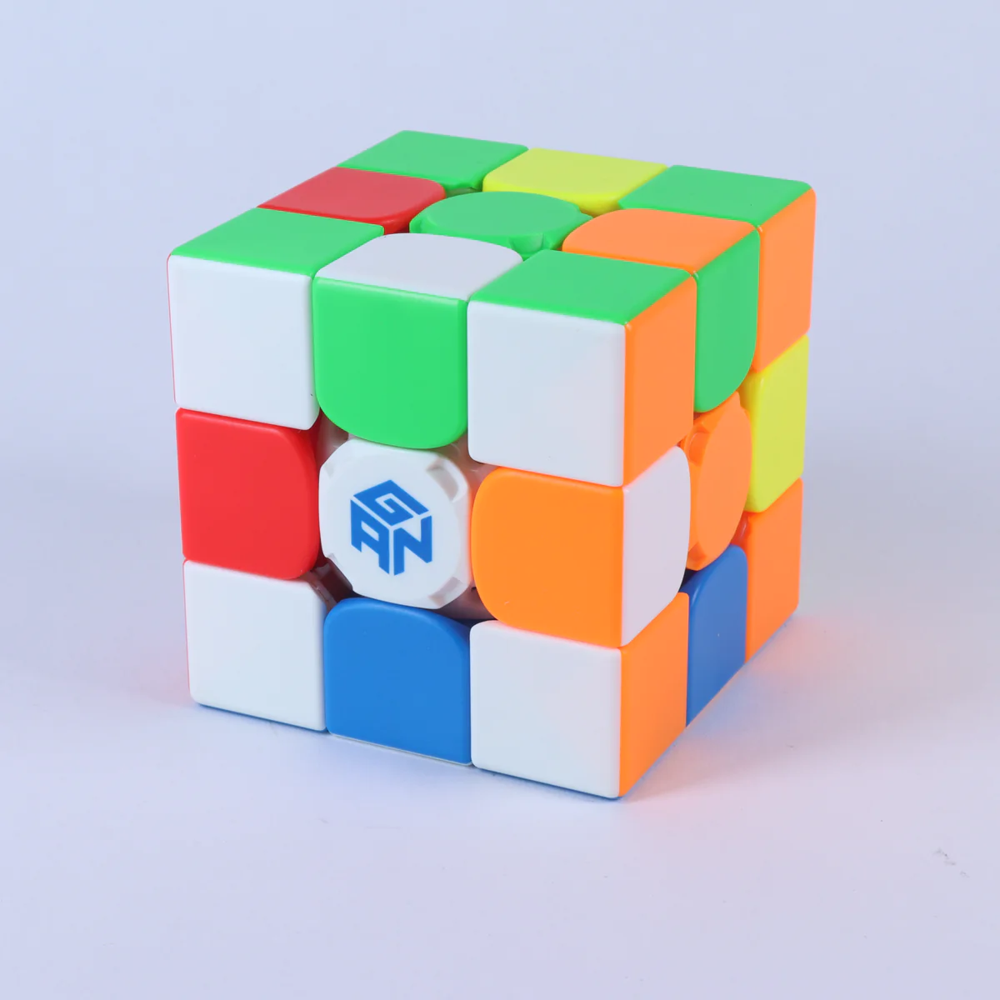

Solving a 3 by 3 Rubicks Cube

The step to solving the 3 by 3 Rubick's Cube is first making the cross the solving the first 2 layers.
After making the cross and solving the first 2 layers is Oreintating the last layer also known as OLL.THan after doing oll
The last step to solving the Rubick's Cube is Permutation of the Last layer also known as PLL.All of this are divided as 4 steps to
to make it easy to learn
Steps to Solve the Rubicks Cube
- Cross
- F2L(First Two Layers)
- OLL(Orientation of Last Layer)
- PLL(Permutation of Last Layer)
Solving The Cross
Solving the cross on a 3x3 Rubik's Cube is one of the first steps towards solving the entire cube. Here are the detailed steps to solve the cross to make it easier:
Step 1: Choose a color for the cross
Pick one color and find the center piece with that color. This center piece will serve as the base for the cross.
Step 2: Find the edge pieces
Look for the edge pieces that have the same color as the center piece you chose in Step 1. There should be four of them.
Step 3: Match the edge pieces
You need to match each of the edge pieces with the center piece. To do this, find an edge piece with the same color as the center piece and hold it to the left or right of the center piece. Then, rotate the bottom layer until the other color on the edge piece matches the color of the adjacent center piece.
Step 4: Insert the matched edge pieces
With the matched edge piece in the bottom layer and the other color facing the corresponding center piece, hold the top layer so that the center piece is on top of the cube. Then, rotate the top layer until the edge piece is directly above its correct position.
Step 5: Insert the remaining edge pieces
Repeat Steps 3 and 4 for the remaining edge pieces.
Step 6: Check the cross
After inserting all four edge pieces, check if you have a cross on the top face of the cube. If not, repeat the previous steps until you have a completed cross on the top face.
Once you have completed the cross, you can move on to the next steps of solving the Rubik's Cube.
Solving The First 2 Layers(F2L)
Oreintating The Last Layer(OLL)
Permutatinng The Last Layer(PLL)